Om de Nederlandse taal te gebruiken klik op het kleine balletje links boven en selecteer Nederlands.
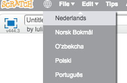
Als je via de website werkt, is het handiger om een account te hebben om jouw werk te bewaren en delen, maar dat hoeft niet. Je kan altijd je eigen werk naar je computer downloaden.
Als je op een MacBook werkt dan moet je laptop ondersteuning hebben voor Flash.
Hoe het spel werkt
Vierkanten van verschillende maten tekenen op willekeurige plekken.
Sprite veranderen en het eerste niveau starten. Het huidige niveau is zichtbaar.
Voor iedere vierkant die de sprite aanraakt verlies je punten. De punten zijn zichtbaar. Je begint met 100 punten.
Steeds wanneer een niveau afgemaakt is, worden nieuwe vierkanten getekend.
Vierkanten maken
Eerste stap: klein beginnen. Zo kunnen wij een vierkant maken:
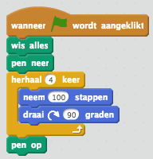
Als je dit uitvoert, krijg je een vierkant op dezelfde plaats in dezelfde grootte. (De plek verandert als je de sprite op een andere plek neerzet)
Om de sprite op een andere plek te zetten moeten we de volgende instructie gebruiken: 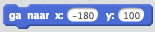. De nieuwe instructies zijn dan:
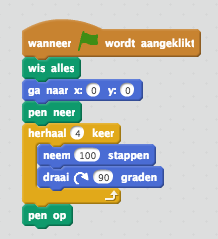
MEER vierkanten maken
Maar... wij willen meer dan alleen één vierkant.
Experiment 1: maak een kopie van de huidige instructies en verander dan de X en Y waarden om de sprite op een andere plek neer te zetten.
Klik met de rechter muisknop op "ga naar..." en selecter "kopie maken". Probeer verschillende waarden voor X en Y uit.
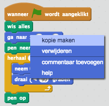
Nu hebben wij 2 vierkanten op 2 verschillende plekken. Cool!
Let op: Kijk goed naar de instructies. Het enige verschil zijn de waarden van X en Y. We hebben net een kopie gemaakt en alleen de waarden aangepast.
De limitaties van ons experiment...
Nou hebben wij alleen 2(!) vierkanten. :-(
Als wij verschillende plekken willen, moeten wij de waarden altijd aanpassen voordat wij de spel starten. Dat is NIET handig... :/
Als wij meer vierkanten willen, moeten wij meer kopieën maken en nog meer waarden aanpassen. Dat is ook NIET handig... :/
Meer instructies betekent meer werk en een grotere kans dat wij fouten maken.
Er moet een andere manier zijn om dit te doen! Iets dat makkelijker, slimmer, korter is...?
Daarvoor hebben we.... Blokken!
Blokken?
Zo maak je een blok. Meer blokken->Maak een blok->Geef jouw blok zijn eigen naam. Mijn blok heet "maakEenVierkant"
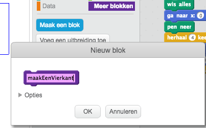
Ons gloednieuwe blok heeft wel een naam, maar nog geen inhoud. Hierin zetten wij de instructies om een vierkant te tekenen.
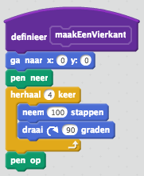
Blok gebruiken
Let op: Ons nieuwe blok is alleen zichtbaar voor de huidige sprite (en alleen die kan het blok gebruiken).
Probeer dit: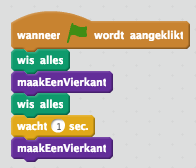
Dus... Nu kunnen wij met één instructie direct een vierkant tekenen. Dit levert meer voordelen:
Makkelijker hergebruik van een set met instructies. In dit geval: het tekenen van een vierkant.
De hoofdinstructies worden makkelijker te lezen en te begrijpen.
De hoofdinstructies worden ook korter en de kans om fouten te maken wordt ook kleiner.
Maar... onze vierkant staat wel steeds weer op hetzelfde plek... :/
Blok gebruiken... een beetje anders.
Klik met de rechter muisknop op het nieuwe blok en selecteer bewerken. Onder Opties voeg 3 getalvelden toe.
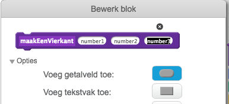
Via deze getalvelden kunnen wij waarden doorgeven aan ons blok voor positie (X en Y) en de maat. Dus: in plaats van number1, number2 en number3 kunnen wij ze xPositie, yPositie en maat noemen.
Deze getalvelden zijn variabelen. Ze kunnen variëren/veranderen iedere keer dat wij de blokje aanroepen.
We geven de waarden aan maar we gebruiken ze nog steeds niet in onze hoofdinstructies. We moeten het blok aanpassen: sleep elke variabele naam op de juiste plek (variabele maat hoort bij "neem ... stappen")
Voorbeeld voor xPositie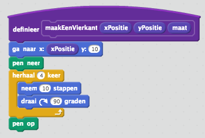
Wat kunnen we nog meer variëren voor onze tekeningen?
Ideen om te experimenteren:
Pendikte.
Pen kleur (een kleur voor alle lijnen of verschillende kleuren voor elke lijn).
Pen helderheid.
Teken een driehoek, een cirkel of een ruit in plaats van een vierkant.
Nieuw blok met variabelen gebruiken
We hebben ons blok veranderd. Nu is het tijd om "maakEenVierkant" te gebruiken. Bijvoorbeeld: 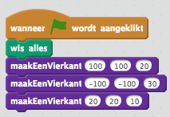
Maar... dat is toch niet willekeurig? Wij zeggen precies waar de tekening moet beginnen en welke maat hij moet hebben. We geven de exacte waarden aan.
Gelukig heeft Scratch een oplossing. In Functies is er een blok "willekeurig getal tussen ... en ...". Die kunnen wij gebruiken om willekeurige waarden door te geven aan ons maakEenVierkant blok.
Vraag: wat zijn de maximum en minimum waarden voor x en y?
Nog een verbetering: gebruik een herhaal blok om maakEenVierkant meerdere keren aan te roepen.
Nu hebben wij het eerste punt van slide 5 af!
Controleren
Zo ziet mijn programma nu uit:
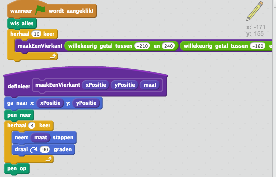
Heb jij ongeveer hetzelfde?
Punt 2: Niveau starten en laten zien
Tot nu toe hebben wij gezien dat ons blok was toegangkelijk alleen voor de sprite waarvoor we deze hebben gemaakt.
Denk aan een niveau waarde: die is altijd zichtbaar, geldt voor alle sprites, achtergronden, blokken, etc.
Dit noemen wij in programmeren een globale variabele.
Met zo'n globale variabele kan je makkelijk het niveau aanduiden.
Het nadeel van globale variabele is dat, omdat iedereen hem kan gebruiken, iedereen hem ook kan veranderen! Wees dus voorzichtig met wie (en vanuit waar) jouw niveau verandert!
Punt 2: Niveau variabele maken en laten zien
Zo maak jij een globale variabele in Scratch: Data->Maak een variabele. Geef de variabele een naam, en natuurlijk willen wij hem Voor alle sprites gebruiken.
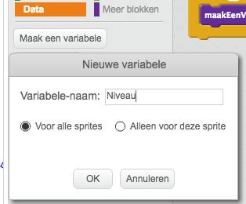
Blijf in het Data-menu en gebruik de instructies "maak Niveau ..." en "toon variabele Niveau" helemaal aan het begin van jouw programma. Nu hebben wij het niveau geïnitializeerd en ook laten zien!
Punt 2: Sprite veranderen
Nu willen wij een andere sprite gebruiken. Kies jouw eigen sprite! Tip: kies voor een bewegende sprite om leuke animaties er bij te krijgen.
Deze sprite heeft nog geen instructies. Dit moeten wij helemaal opnieuw programmeren. Wees niet bang, wij hoeven niet veel te doen!
Dit is de tweede sprite. Hij moet niet meteen zichtbaar zijn, maar pas als het tekenen van vierkanten klaar is. Daarom gebruiken wij verdwijn vanuit Uiterlijk
Wij willen onze sprite bewegen met de pijltjestoetsen (rechts, links, omhoog, omlaag). Maak dan de juiste 4 blokken met instructies om de bewegingen te controleren. Voorbeeld voor rechts: 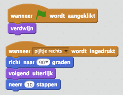
Omdat ik een bewegende sprite heb gekozen, gebruik in de instructie volgende uiterlijk om een animatie tijdens het bewegen te krijgen.
Overgaan van tekenen naar tweede sprite
Op een één of andere manier moeten wij weten wanneer Scratch klaar is met het tekenen van de vierkanten, zodat we met de tweede sprite kunnen beginnen.
Daarvoor heeft Scratch in Gebeurtenissen de instructie zend signaal...!
Ga terug naar jouw eerste sprite en zet na de herhaalinstructie het blok "zend signaal ..." neer.
Om dit duidelijker te maken noem ik mijn bericht "tekenen is klaar".
Omdat wij klaar zijn met tekenen kunnen we ook onze eerste sprite laten verdwijnen. Vergeet dan niet om het blok "verschijn" te gebruiken aan de start van jouw programma
Instructies voor de eerste sprite controleren
Met de "verschijn"/"verdwijn" en "zend signaal" instructies, ziet mijn programma er zo uit voor de eerste sprite:
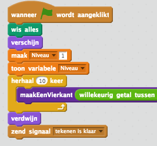
Tweede sprite ontvangt signaal
Nu kunnen we naar onze tweede sprite gaan om dit signaal controleren! Gebruik de instructie wanneer ik signaal "tekenen is klaar" ontvang
Natuurlijk moeten wij onze tweede sprite goed initialiseren:
Wijs het in het juiste richting
Zet de sprite op de startpositie (midden links)
Ik maak ook mijn sprite een beetje kleiner zodat deze goed bij mijn kleine vierkanten past
En zichtbaar maken!
Bijvoorbeeld: 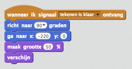
Punten tellen
Maak een globale variabele voor punten. Dit moet je initialiseren met 100 en tonen aan het begin van jouw programma.
Doe dit na de niveau instructies.
Voor jouw tweede sprite, in de beweging instructies ga jij de punten veranderen als je de kleur van jouw vierkant aanraakt.
Bijvoorbeeld: 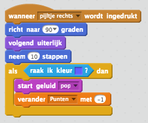
Dit moet je doen voor iedere beweging: rechts, links, omhoog omlaag
Niveau afmaken
Wij willen het niveau afmaken als wij de rechter rand hebben aangeraakt. Onze sprite moet verdwijnen en we moeten Scratch laten weten dat deze opnieuw moet beginnen met tekenen.
Dus op het bewegen naar rechts zetten wij de volgende instructies:
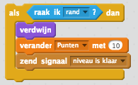
Nieuw niveau maken
Ga terug naar jouw eerste sprite een ontvang het signaal "niveau is klaar".
Omdat wij de instructies voor het maken van een niveau moeten hergebruiken heb ik ze in een apart blok gezet. Dan ziet mijn programma zo uit:
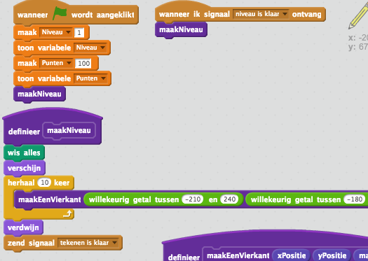
Klaar
Gefeliciteerd! Jij bent klaar! Heb jij meer ideen om de niveaus te veranderen? Laat mij weten.